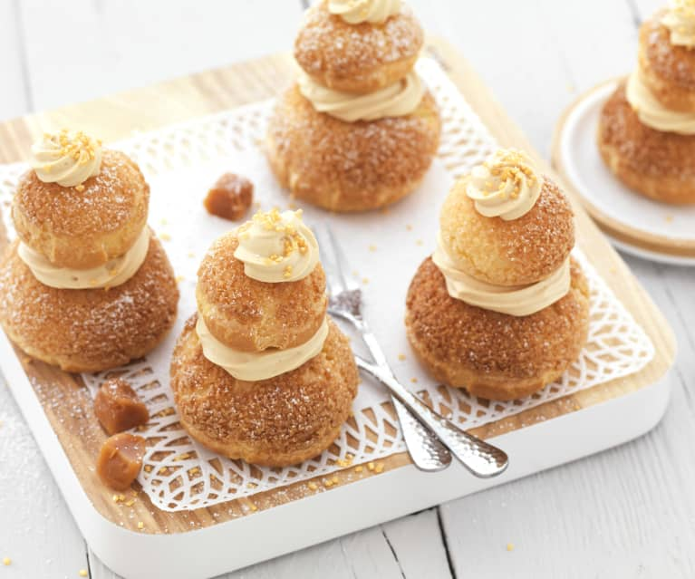

Religieuse
Religieuse is a classic French pastry that resembles a miniature tower of cream-filled choux buns, with one smaller choux puff stacked on top of a larger one. Decorated with icing and piped buttercream, its name, meaning "nun," likely comes from its shape and appearance, which is thought to resemble a nun in her habit. This delicate and delicious dessert is a staple of French pâtisserie, recognized for its unique shape and rich, creamy filling.
Religieuse Recipe
Ingredients

For the Choux Pastry:
- 1/2 cup (120 ml) water
- 1/2 cup (120 ml) milk
- 1/2 cup (115 g) unsalted butter
- 1 cup (125 g) all-purpose flour
- 1/2 tsp salt
- 1 tbsp sugar
- 4 large eggs
For the Pastry Cream Filling:
- 2 cups (480 ml) whole milk
- 1/2 cup (100 g) sugar
- 4 large egg yolks
- 1/4 cup (30 g) cornstarch
- 1 tsp vanilla extract
- 2 tbsp unsalted butter, softened
For Decoration:
- Icing in desired colors, traditionally chocolate or coffee-flavored
- Piped buttercream for decoration
Instructions
- Make the Choux Pastry:
- Preheat your oven to 375°F (190°C) and line a baking sheet with parchment paper.
- In a medium saucepan, bring water, milk, butter, salt, and sugar to a boil.
- Remove from heat, add flour, and stir vigorously until the mixture forms a smooth ball.
- Return to heat and cook for 1-2 minutes, stirring constantly, to dry out the dough.
- Transfer to a mixing bowl. Add eggs one at a time, mixing thoroughly after each addition until the dough is smooth and glossy.
- Transfer the dough to a piping bag. Pipe 8 large and 8 small rounds onto the baking sheet.
- Bake for 20-25 minutes or until golden brown. Cool completely.
- Prepare the Pastry Cream:
- Heat milk in a saucepan until just starting to simmer.
- In a separate bowl, whisk egg yolks, sugar, and cornstarch until pale and creamy.
- Slowly pour the hot milk into the egg mixture, whisking constantly.
- Return to the saucepan and cook over medium heat until thickened, stirring constantly.
- Remove from heat, add butter and vanilla extract, and whisk until smooth. Cool completely.
- Assemble the Religieuse:
- Fill a piping bag with pastry cream and pipe it into the bottom of each choux puff through a small hole.
- Spread icing on the tops of the puffs, then stack a smaller puff on top of a larger one.
- Pipe buttercream around the edges of each stack where the choux meet.
Tips for Making Religieuse
- Perfect Your Choux Pastry:
- Ensure the dough is dry before adding eggs, as this helps it hold its shape. Beating in eggs one at a time will give the dough the perfect consistency.
- Smooth Piping for Consistency:
- Use a damp finger to smooth any pointed tops after piping the choux rounds. This helps ensure even baking.
- Cool Pastry Cream Thoroughly:
- For a perfect filling, make sure the pastry cream is thickened and cool before piping. If it’s too thin, it will leak.
- Decorate with Precision:
- Use a steady hand when icing the tops and applying buttercream to create the signature look. Piping practice will help achieve a clean and polished finish.
- Store Properly:
- Religieuses are best enjoyed the day they are made. Store in the refrigerator if needed, but avoid keeping them for too long, as the choux can soften.
Best Time of Year to Enjoy Religieuse
Religieuse is a year-round favorite in French pâtisseries and doesn’t have a specific season. However, because it’s often filled with flavored pastry creams, you can match flavors with seasonal themes:
- Spring: Light fruit flavors like strawberry or raspberry work beautifully.
- Summer: Try fresh vanilla or light citrus flavors.
- Fall: Go for coffee or caramel-flavored pastry creams.
- Winter: Rich flavors like chocolate and mocha are delightful.
This timeless pastry can be enjoyed on any occasion, and its unique shape and taste make it especially festive and suitable for holidays, celebrations, or as a treat for afternoon tea.